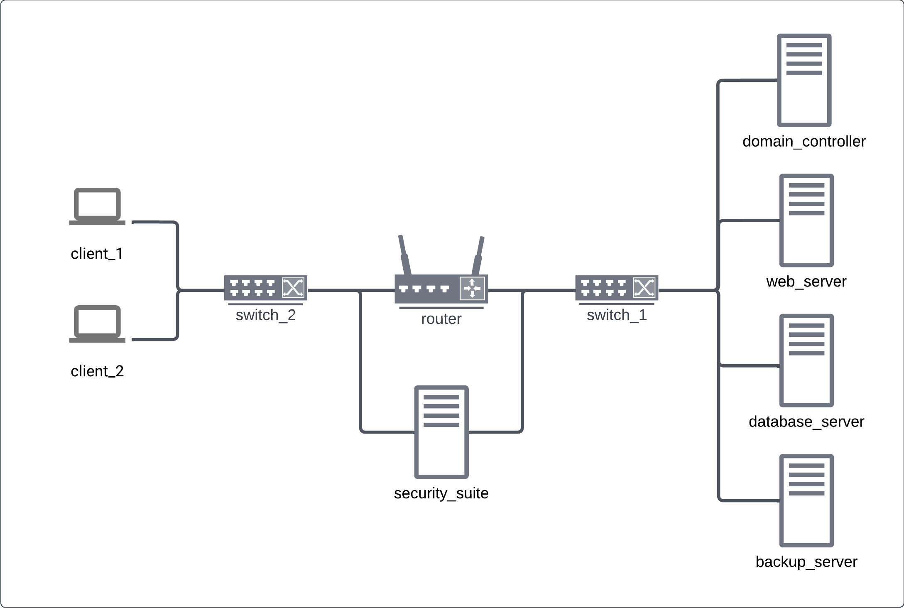
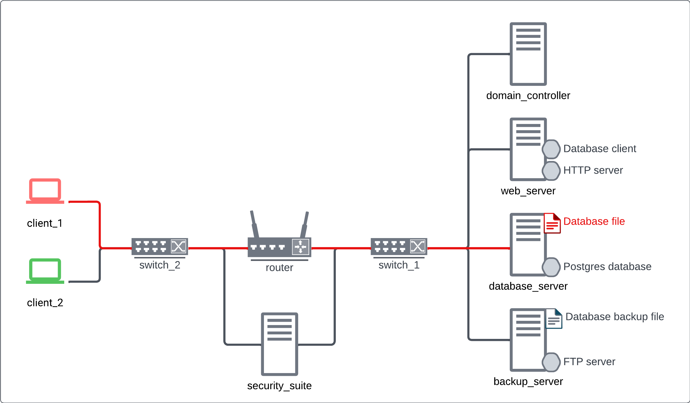

Data Manipulation Scenario#
© Crown-owned copyright 2025, Defence Science and Technology Laboratory UK
Scenario#
The network consists of an office subnet and a server subnet. Clients in the office access a website which fetches data from a database. Occasionally, admins need to access the database directly from the clients.
(click image to enlarge)
The red agent deletes the contents of the database. When this happens, the web app cannot fetch data and users navigating to the website get a 404 error.
Network#
The web server has:
a web service that replies to user HTTP requests
a database client that fetches data for the web service
The database server has:
a POSTGRES database service
a database file which is accessed by the database service
FTP client used for backing up the data to the backup_server
The backup server has:
a copy of the database file in a known good state
FTP server that can send the backed up file back to the database server
Green agent#
There are green agents logged onto client 1 and client 2. They use the web browser to navigate to http://arcd.com/users. The web server replies with a status code 200 if the data is available on the database or 404 if not available.
Sometimes, the green agents send a request directly to the database to check that it is reachable.
Red agent#
At the start of every episode, the red agent randomly chooses either client 1 or client 2 to login to. It waits a bit then sends a DELETE query to the database from its chosen client. If the delete is successful, the database file is flagged as compromised to signal that data is not available.
(click image to enlarge)
Blue agent#
The blue agent can view the entire network, but the health statuses of components are not updated until a scan is performed. The blue agent should restore the database file from backup after it was compromised. It can also prevent further attacks by blocking the red agent client from sending the malicious SQL query to the database server. This can be done by implementing an ACL rule on the router.
However, these rules will also impact greens’ ability to check the database connection. The blue agent should only block the infected client, it should let the other client connect freely. Once the attack has begun, automated traffic monitoring will detect it as suspicious network traffic. The blue agent’s observation space will show this as an increase in the number of malicious network events (NMNE) on one of the network interfaces. To achieve optimal reward, the agent should only block the client which has the non-zero outbound NMNE.
Reinforcement learning details#
Scripted agents:#
Red#
The red agent sits on a client and uses an application called DataManipulationBot whose sole purpose is to send a DELETE query to the database. The red agent can choose one of two action each timestep: 1. do nothing 2. execute the data manipulation application The schedule for selecting when to execute the application is controlled by three parameters: - start time - frequency - variance
Attacks start at a random timestep between (start_time - variance) and (start_time + variance). After each attack, another is attempted after a random delay between (frequency - variance) and (frequency + variance) timesteps.
The data manipulation app itself has an element of randomness because the attack has a probability of success. The default is 0.8 to succeed with the port scan step and 0.8 to succeed with the attack itself. Upon a successful attack, the database file becomes corrupted which incurs a negative reward for the RL defender.
The red agent does not use information about the state of the network to decide its action. For a more complex red agent please refer to the UC7 scenario
Green#
The green agents use the web browser application to send requests to the web server. The schedule of each green agent is currently random, it will do nothing 30% of the time, send a web request 60% of the time, and send a db status check 10% of the time.
When a green agent is blocked from accessing the data through the webpage, this incurs a negative reward to the RL defender.
Also, when the green agent is blocked from checking the database status, it causes a small negative reward.
Observation Space#
The blue agent’s observation space is structured as nested dictionary with the following information:
- ICS
- LINKS
- <link_id>
- PROTOCOLS
- <protocol>
- load
- NODES
- <node_id>
- SERVICES
- <service_id>
- operating_status
- health_status
- FOLDERS
- <folder_id>
- health_status
- FILES
- <file_id>
- health_status
- NETWORK_INTERFACES
- <nic_id>
- nic_status
- nmne
- inbound
- outbound
- operating_status
- users
- local_login
- remote_sessions
- <router_id>
- ACL
- <rule_number 1-10>
- position
- permission
- source_node_id
- source_port
- dest_node_id
- dest_port
- protocol
- users
- local_login
- remote_session
Mappings#
The dict keys for node_id are in the following order:
node_id |
node name |
|---|---|
0 |
domain_controller |
1 |
web_server |
2 |
database_server |
3 |
backup_server |
4 |
security_suite |
5 |
client_1 |
6 |
client_2 |
Service 1 on node 2 (web_server) corresponds to the Web Server service. Other services are only there for padding to ensure that each node’s observation space has the same shape. They are filled with zeroes.
Folder 1 on node 3 corresponds to the database folder. File 1 in that folder corresponds to the database storage file. Other files and folders are only there for padding to ensure that each node’s observation space has the same shape. They are filled with zeroes.
The dict keys for link_id are in the following order:
link_id |
endpoint_a |
endpoint_b |
|---|---|---|
1 |
router_1 |
switch_1 |
2 |
router_1 |
switch_2 |
3 |
switch_1 |
domain_controller |
4 |
switch_1 |
web_server |
5 |
switch_1 |
database_server |
6 |
switch_1 |
backup_server |
7 |
switch_1 |
security_suite |
8 |
switch_2 |
client_1 |
9 |
switch_2 |
client_2 |
10 |
switch_2 |
security_suite |
The ACL rules in the observation space appear in the same order that they do in the actual ACL. Though, only the first 10 rules are shown, there are default rules lower down that cannot be changed by the agent. The extra rules just allow the network to function normally, by allowing pings, ARP traffic, etc.
Most nodes have only 1 network_interface, so the observation for those is placed at NIC index 1 in the observation space. Only the security suite has 2 NICs, the second NIC in the observation space is the one that connects the security suite with swtich_2.
The meaning of the services’ operating_state is:
operating_state |
label |
|---|---|
0 |
UNUSED |
1 |
RUNNING |
2 |
STOPPED |
3 |
PAUSED |
4 |
DISABLED |
5 |
INSTALLING |
6 |
RESTARTING |
The meaning of the services’ health_state is:
health_state |
label |
|---|---|
0 |
UNUSED |
1 |
GOOD |
2 |
FIXING |
3 |
COMPROMISED |
4 |
OVERWHELMED |
The meaning of the files’ and folders’ health_state is:
health_state |
label |
|---|---|
0 |
UNUSED |
1 |
GOOD |
2 |
COMPROMISED |
3 |
CORRUPT |
4 |
RESTORING |
5 |
REPAIRING |
The meaning of the NICs’ operating_status is:
operating_status |
label |
|---|---|
0 |
UNUSED |
1 |
ENABLED |
2 |
DISABLED |
NMNE (number of malicious network events) means, for inbound or outbound traffic, means:
value |
NMNEs |
|---|---|
0 |
None |
1 |
1 - 5 |
2 |
6 - 10 |
3 |
More than 10 |
Link load has the following meaning:
load |
percent utilisation |
|---|---|
0 |
exactly 0% |
1 |
0-11% |
2 |
11-22% |
3 |
22-33% |
4 |
33-44% |
5 |
44-55% |
6 |
55-66% |
7 |
66-77% |
8 |
77-88% |
9 |
88-99% |
10 |
exactly 100% |
ACL permission has the following meaning:
permission |
label |
|---|---|
0 |
UNUSED |
1 |
ALLOW |
2 |
DENY |
ACL source / destination node ids actually correspond to IP addresses (since ACLs work with IP addresses)
source / dest node id |
ip_address |
label |
|---|---|---|
0 |
UNUSED |
|
1 |
ALL addresses |
|
2 |
192.168.1.10 |
domain_controller |
3 |
192.168.1.12 |
web_server |
4 |
192.168.1.14 |
database_server |
5 |
192.168.1.16 |
backup_server |
6 |
192.168.1.110 |
security_suite (eth-1) |
7 |
192.168.10.21 |
client_1 |
8 |
192.168.10.22 |
client_2 |
9 |
192.168.10.110 |
security_suite (eth-2) |
ACL source / destination port ids have the following encoding:
port id |
port number |
port use |
|---|---|---|
0 |
UNUSED |
|
1 |
ALL |
|
2 |
219 |
ARP |
3 |
53 |
DNS |
4 |
80 |
HTTP |
5 |
5432 |
POSTGRES_SERVER |
ACL protocol ids have the following encoding:
protocol id |
label |
|---|---|
0 |
UNUSED |
1 |
ALL |
2 |
ICMP |
3 |
TCP |
4 |
UDP |
Action Space#
The blue agent chooses from a list of 54 pre-defined actions. The full list is defined in the action_map in the config. The most important ones are explained here:
0: Do nothing1: Scan the web service - this refreshes the health status in the observation space9: Scan the database file - this refreshes the health status of the database file13: Patch the database service - This triggers the database to restore data from the backup server39: Shut down client 140: Start up client 146: Block outgoing traffic from client 147: Block outgoing traffic from client 250: Block TCP traffic from client 1 to the database node51: Block TCP traffic from client 2 to the database node52-61: Remove ACL rules 1-1066: Disconnect client 1 from the network67: Reconnect client 1 to the network68: Disconnect client 2 from the network69: Reconnect client 2 to the network
The other actions will either have no effect or will negatively impact the network, so the blue agent should avoid taking them.
Reward Function#
The blue agent’s reward is calculated using these measures: 1. Whether the database file is in a good state (+1 for good, -1 for corrupted, 0 for any other state) 2. Whether each green agents’ most recent webpage request was successful (+1 for a 200 return code, -1 for a 404 return code and 0 otherwise). 3. Whether each green agents’ most recent DB status check was successful (+1 for a successful connection, -1 for no connection).
The file status reward and the two green-agent-related rewards are averaged to get a total step reward.
Demonstration#
First, load the required modules
[1]:
!primaite setup
2025-03-24 09:51:50,137: Performing the PrimAITE first-time setup...
2025-03-24 09:51:50,138: Building the PrimAITE app directories...
2025-03-24 09:51:50,138: Building primaite_config.yaml...
2025-03-24 09:51:50,138: Rebuilding the demo notebooks...
2025-03-24 09:51:50,160: Rebuilding the example notebooks...
2025-03-24 09:51:50,162: PrimAITE setup complete!
[2]:
# Imports
from primaite.config.load import data_manipulation_config_path
from primaite.session.environment import PrimaiteGymEnv
from primaite.game.agent.interface import AgentHistoryItem
import yaml
from pprint import pprint
Instantiate the environment. We will also disable the agent observation flattening.
This cell will print the observation when the network is healthy. You should be able to verify Node file and service statuses against the description above.
[3]:
# create the env
with open(data_manipulation_config_path(), 'r') as f:
cfg = yaml.safe_load(f)
# set success probability to 1.0 to avoid rerunning cells.
cfg['simulation']['network']['nodes'][8]['applications'][0]['options']['data_manipulation_p_of_success'] = 1.0
cfg['simulation']['network']['nodes'][9]['applications'][1]['options']['data_manipulation_p_of_success'] = 1.0
cfg['simulation']['network']['nodes'][8]['applications'][0]['options']['port_scan_p_of_success'] = 1.0
cfg['simulation']['network']['nodes'][9]['applications'][1]['options']['port_scan_p_of_success'] = 1.0
# don't flatten observations so that we can see what is going on
cfg['agents'][3]['agent_settings']['flatten_obs'] = False
env = PrimaiteGymEnv(env_config = cfg)
obs, info = env.reset()
print('env created successfully')
pprint(obs)
2025-03-24 09:51:53,734: PrimaiteGymEnv RNG seed = None
2025-03-24 09:51:53,735: Resetting environment, episode 0, avg. reward: 0.0
2025-03-24 09:51:53,736: Saving agent action log to /home/runner/primaite/4.0.0/sessions/2025-03-24/09-51-50/agent_actions/episode_0.json
env created successfully
{'ICS': 0,
'LINKS': {1: {'PROTOCOLS': {'ALL': 1}},
2: {'PROTOCOLS': {'ALL': 1}},
3: {'PROTOCOLS': {'ALL': 1}},
4: {'PROTOCOLS': {'ALL': 1}},
5: {'PROTOCOLS': {'ALL': 1}},
6: {'PROTOCOLS': {'ALL': 1}},
7: {'PROTOCOLS': {'ALL': 1}},
8: {'PROTOCOLS': {'ALL': 1}},
9: {'PROTOCOLS': {'ALL': 1}},
10: {'PROTOCOLS': {'ALL': 0}}},
'NODES': {'HOST0': {'FOLDERS': {1: {'FILES': {1: {'health_status': 0}},
'health_status': 0}},
'NICS': {1: {'NMNE': {'inbound': 0, 'outbound': 0},
'TRAFFIC': {'icmp': {'inbound': 0,
'outbound': 0},
'tcp': {53: {'inbound': 0,
'outbound': 0}}},
'nic_status': 1},
2: {'NMNE': {'inbound': 0, 'outbound': 0},
'TRAFFIC': {'icmp': {'inbound': 0,
'outbound': 0},
'tcp': {53: {'inbound': 0,
'outbound': 0}}},
'nic_status': 0}},
'SERVICES': {1: {'health_status': 0,
'operating_status': 0}},
'operating_status': 1,
'users': {'local_login': 0, 'remote_sessions': 0}},
'HOST1': {'FOLDERS': {1: {'FILES': {1: {'health_status': 0}},
'health_status': 0}},
'NICS': {1: {'NMNE': {'inbound': 0, 'outbound': 0},
'TRAFFIC': {'icmp': {'inbound': 0,
'outbound': 0},
'tcp': {53: {'inbound': 0,
'outbound': 0}}},
'nic_status': 1},
2: {'NMNE': {'inbound': 0, 'outbound': 0},
'TRAFFIC': {'icmp': {'inbound': 0,
'outbound': 0},
'tcp': {53: {'inbound': 0,
'outbound': 0}}},
'nic_status': 0}},
'SERVICES': {1: {'health_status': 0,
'operating_status': 1}},
'operating_status': 1,
'users': {'local_login': 0, 'remote_sessions': 0}},
'HOST2': {'FOLDERS': {1: {'FILES': {1: {'health_status': 0}},
'health_status': 0}},
'NICS': {1: {'NMNE': {'inbound': 0, 'outbound': 0},
'TRAFFIC': {'icmp': {'inbound': 0,
'outbound': 0},
'tcp': {53: {'inbound': 0,
'outbound': 0}}},
'nic_status': 1},
2: {'NMNE': {'inbound': 0, 'outbound': 0},
'TRAFFIC': {'icmp': {'inbound': 0,
'outbound': 0},
'tcp': {53: {'inbound': 0,
'outbound': 0}}},
'nic_status': 0}},
'SERVICES': {1: {'health_status': 0,
'operating_status': 0}},
'operating_status': 1,
'users': {'local_login': 0, 'remote_sessions': 0}},
'HOST3': {'FOLDERS': {1: {'FILES': {1: {'health_status': 0}},
'health_status': 0}},
'NICS': {1: {'NMNE': {'inbound': 0, 'outbound': 0},
'TRAFFIC': {'icmp': {'inbound': 0,
'outbound': 0},
'tcp': {53: {'inbound': 0,
'outbound': 0}}},
'nic_status': 1},
2: {'NMNE': {'inbound': 0, 'outbound': 0},
'TRAFFIC': {'icmp': {'inbound': 0,
'outbound': 0},
'tcp': {53: {'inbound': 0,
'outbound': 0}}},
'nic_status': 0}},
'SERVICES': {1: {'health_status': 0,
'operating_status': 0}},
'operating_status': 1,
'users': {'local_login': 0, 'remote_sessions': 0}},
'HOST4': {'FOLDERS': {1: {'FILES': {1: {'health_status': 0}},
'health_status': 0}},
'NICS': {1: {'NMNE': {'inbound': 0, 'outbound': 0},
'TRAFFIC': {'icmp': {'inbound': 0,
'outbound': 0},
'tcp': {53: {'inbound': 0,
'outbound': 0}}},
'nic_status': 1},
2: {'NMNE': {'inbound': 0, 'outbound': 0},
'TRAFFIC': {'icmp': {'inbound': 0,
'outbound': 0},
'tcp': {53: {'inbound': 0,
'outbound': 0}}},
'nic_status': 1}},
'SERVICES': {1: {'health_status': 0,
'operating_status': 0}},
'operating_status': 1,
'users': {'local_login': 0, 'remote_sessions': 0}},
'HOST5': {'FOLDERS': {1: {'FILES': {1: {'health_status': 0}},
'health_status': 0}},
'NICS': {1: {'NMNE': {'inbound': 0, 'outbound': 0},
'TRAFFIC': {'icmp': {'inbound': 0,
'outbound': 0},
'tcp': {53: {'inbound': 0,
'outbound': 0}}},
'nic_status': 1},
2: {'NMNE': {'inbound': 0, 'outbound': 0},
'TRAFFIC': {'icmp': {'inbound': 0,
'outbound': 0},
'tcp': {53: {'inbound': 0,
'outbound': 0}}},
'nic_status': 0}},
'SERVICES': {1: {'health_status': 0,
'operating_status': 0}},
'operating_status': 1,
'users': {'local_login': 0, 'remote_sessions': 0}},
'HOST6': {'FOLDERS': {1: {'FILES': {1: {'health_status': 0}},
'health_status': 0}},
'NICS': {1: {'NMNE': {'inbound': 0, 'outbound': 0},
'TRAFFIC': {'icmp': {'inbound': 0,
'outbound': 0},
'tcp': {53: {'inbound': 0,
'outbound': 0}}},
'nic_status': 1},
2: {'NMNE': {'inbound': 0, 'outbound': 0},
'TRAFFIC': {'icmp': {'inbound': 0,
'outbound': 0},
'tcp': {53: {'inbound': 0,
'outbound': 0}}},
'nic_status': 0}},
'SERVICES': {1: {'health_status': 0,
'operating_status': 0}},
'operating_status': 1,
'users': {'local_login': 0, 'remote_sessions': 0}},
'ROUTER0': {'ACL': {0: {'dest_ip_id': 0,
'dest_port_id': 0,
'dest_wildcard_id': 0,
'permission': 0,
'position': 0,
'protocol_id': 0,
'source_ip_id': 0,
'source_port_id': 0,
'source_wildcard_id': 0},
1: {'dest_ip_id': 0,
'dest_port_id': 0,
'dest_wildcard_id': 0,
'permission': 0,
'position': 1,
'protocol_id': 0,
'source_ip_id': 0,
'source_port_id': 0,
'source_wildcard_id': 0},
2: {'dest_ip_id': 0,
'dest_port_id': 0,
'dest_wildcard_id': 0,
'permission': 0,
'position': 2,
'protocol_id': 0,
'source_ip_id': 0,
'source_port_id': 0,
'source_wildcard_id': 0},
3: {'dest_ip_id': 0,
'dest_port_id': 0,
'dest_wildcard_id': 0,
'permission': 0,
'position': 3,
'protocol_id': 0,
'source_ip_id': 0,
'source_port_id': 0,
'source_wildcard_id': 0},
4: {'dest_ip_id': 0,
'dest_port_id': 0,
'dest_wildcard_id': 0,
'permission': 0,
'position': 4,
'protocol_id': 0,
'source_ip_id': 0,
'source_port_id': 0,
'source_wildcard_id': 0},
5: {'dest_ip_id': 0,
'dest_port_id': 0,
'dest_wildcard_id': 0,
'permission': 0,
'position': 5,
'protocol_id': 0,
'source_ip_id': 0,
'source_port_id': 0,
'source_wildcard_id': 0},
6: {'dest_ip_id': 0,
'dest_port_id': 0,
'dest_wildcard_id': 0,
'permission': 0,
'position': 6,
'protocol_id': 0,
'source_ip_id': 0,
'source_port_id': 0,
'source_wildcard_id': 0},
7: {'dest_ip_id': 0,
'dest_port_id': 0,
'dest_wildcard_id': 0,
'permission': 0,
'position': 7,
'protocol_id': 0,
'source_ip_id': 0,
'source_port_id': 0,
'source_wildcard_id': 0},
8: {'dest_ip_id': 0,
'dest_port_id': 0,
'dest_wildcard_id': 0,
'permission': 0,
'position': 8,
'protocol_id': 0,
'source_ip_id': 0,
'source_port_id': 0,
'source_wildcard_id': 0},
9: {'dest_ip_id': 0,
'dest_port_id': 0,
'dest_wildcard_id': 0,
'permission': 0,
'position': 9,
'protocol_id': 0,
'source_ip_id': 0,
'source_port_id': 0,
'source_wildcard_id': 0}},
'users': {'local_login': 0, 'remote_sessions': 0}}}}
The red agent will start attacking at some point between step 20 and 30. When this happens, the reward will drop immediately, then drop to -0.8 when green agents try to access the webpage.
[4]:
def friendly_output_red_action(info):
# parse the info dict form step output and write out what the red agent is doing
red_info : AgentHistoryItem = info['agent_actions']['data_manipulation_attacker']
red_action = red_info.action
if red_action == 'do-nothing':
red_str = "do-nothing"
elif red_action == 'node-application-execute':
client = "client 1" if red_info.parameters['node_name'] == "client_1" else "client_2"
red_str = f"ATTACK from {client}"
return red_str
Also, the NMNE outbound of either client 1 (node 5) or client 2 (node 6) has increased from 0 to 1. This tells us which client is being used by the red agent.
[5]:
for step in range(35):
obs, reward, terminated, truncated, info = env.step(0)
red_info : AgentHistoryItem = info['agent_actions']['data_manipulation_attacker']
red_action = red_info.action
if red_action == 'do-nothing':
pass
else:
# Immediate drop in reward from the red agent attack.
print(f"step: {env.game.step_counter}, Red action: {friendly_output_red_action(info)}, Blue reward: {reward:.2f}" )
print(f"step: {env.game.step_counter}, client 1 NMNE: {obs['NODES']['HOST5']['NICS'][1]['NMNE']}")
print(f"step: {env.game.step_counter}, client 2 NMNE: {obs['NODES']['HOST6']['NICS'][1]['NMNE']}")
step: 26, Red action: ATTACK from client_2, Blue reward: 0.20
step: 26, client 1 NMNE: {'inbound': 0, 'outbound': 0}
step: 26, client 2 NMNE: {'inbound': 0, 'outbound': 1}
[6]:
# Reward drops even further as green agents are unable to access the web-server after the red agent attack
print(f"step: {env.game.step_counter}, Current (Post Attack) Blue reward: {reward:.2f}" )
step: 35, Current (Post Attack) Blue reward: -0.80
Now the reward is -0.8, let’s have a look at blue agent’s observation.
The true statuses of the database file and web-server are not updated. The blue agent needs to perform a scan to see that they have degraded.
[7]:
obs, reward, terminated, truncated, info = env.step(9) # scan database file
print(f"step: {env.game.step_counter}, database file obs: {obs['NODES']['HOST2']['FOLDERS'][1]['FILES']}")
obs, reward, terminated, truncated, info = env.step(1) # scan web-server service
print(f"step: {env.game.step_counter}, webserver status {obs['NODES']['HOST1']['SERVICES'][1]}")
step: 36, database file obs: {1: {'health_status': 2}}
step: 37, webserver status {'operating_status': 1, 'health_status': 3}
Now service 1 on HOST1 has health_status = 3, indicating that the web-server is compromised. File 1 in folder 1 on HOST2 has health_status = 2, indicating that the database file is compromised.
The blue agent can now patch the database to restore the file to a good health status.
[8]:
obs, reward, terminated, truncated, info = env.step(13) # patch the database
print(f"step: {env.game.step_counter}")
print(f"Red action: {info['agent_actions']['data_manipulation_attacker'].action}" )
print(f"Green action: {info['agent_actions']['client_1_green_user'].action}" )
print(f"Green action: {info['agent_actions']['client_2_green_user'].action}" )
print(f"Blue reward: {reward}" )
step: 38
Red action: do-nothing
Green action: do-nothing
Green action: node-application-execute
Blue reward: -0.8
The fixing takes two steps, so the reward hasn’t changed yet. Let’s do nothing for another timestep, the reward should improve.
The reward will increase slightly as soon as the file finishes restoring. Then, the reward will increase to 0.9 when both green agents make successful requests.
Run the following cell until the green action is node_application_execute for application 0, then the reward should increase. If you run it enough times, another red attack will happen and the reward will drop again.
[9]:
obs, reward, terminated, truncated, info = env.step(0) # do nothing
print(f"step: {env.game.step_counter}")
print(f"Red action: {info['agent_actions']['data_manipulation_attacker'].action}" )
print(f"Green action: {info['agent_actions']['client_2_green_user'].action}" )
print(f"Green action: {info['agent_actions']['client_1_green_user'].action}" )
print(f"Blue reward: {reward:.2f}" )
step: 39
Red action: do-nothing
Green action: node-application-execute
Green action: node-application-execute
Blue reward: -0.10
The blue agent can prevent attacks by implementing an ACL rule to stop client_1 or client_2 from sending POSTGRES traffic to the database. (Let’s also patch the database file to get the reward back up.)
Let’s block both clients from communicating directly with the database.
[10]:
env.step(13) # Patch the database
print(f"step: {env.game.step_counter}, Red action: {info['agent_actions']['data_manipulation_attacker'].action}, Blue reward:{reward:.2f}" )
env.step(50) # Block client 1
print(f"step: {env.game.step_counter}, Red action: {info['agent_actions']['data_manipulation_attacker'].action}, Blue reward:{reward:.2f}" )
env.step(51) # Block client 2
print(f"step: {env.game.step_counter}, Red action: {info['agent_actions']['data_manipulation_attacker'].action}, Blue reward:{reward:.2f}" )
while abs(reward - 0.8) > 1e-5:
obs, reward, terminated, truncated, info = env.step(0) # do nothing
print(f"step: {env.game.step_counter}, Red action: {info['agent_actions']['data_manipulation_attacker'].action}, Blue reward:{reward:.2f}" )
if env.game.step_counter > 2000:
break # make sure there's no infinite loop if something went wrong
step: 40, Red action: do-nothing, Blue reward:-0.10
step: 41, Red action: do-nothing, Blue reward:-0.10
step: 42, Red action: do-nothing, Blue reward:-0.10
step: 43, Red action: do-nothing, Blue reward:0.90
step: 44, Red action: do-nothing, Blue reward:0.90
step: 45, Red action: do-nothing, Blue reward:0.90
step: 46, Red action: do-nothing, Blue reward:0.90
step: 47, Red action: node-application-execute, Blue reward:0.90
step: 48, Red action: do-nothing, Blue reward:0.90
step: 49, Red action: do-nothing, Blue reward:0.90
step: 50, Red action: do-nothing, Blue reward:0.90
step: 51, Red action: do-nothing, Blue reward:0.90
step: 52, Red action: do-nothing, Blue reward:0.90
step: 53, Red action: do-nothing, Blue reward:0.90
step: 54, Red action: do-nothing, Blue reward:0.90
step: 55, Red action: do-nothing, Blue reward:0.90
step: 56, Red action: do-nothing, Blue reward:0.90
step: 57, Red action: do-nothing, Blue reward:0.90
step: 58, Red action: do-nothing, Blue reward:0.80
Now, even though the red agent executes an attack, the reward will stay at 0.8.
Let’s also have a look at the ACL observation to verify our new ACL rule at positions 4 and 5.
[11]:
pprint(obs['NODES']['ROUTER0']['ACL'][4])
pprint(obs['NODES']['ROUTER0']['ACL'][5])
{'dest_ip_id': 4,
'dest_port_id': 1,
'dest_wildcard_id': 1,
'permission': 2,
'position': 4,
'protocol_id': 3,
'source_ip_id': 7,
'source_port_id': 1,
'source_wildcard_id': 1}
{'dest_ip_id': 4,
'dest_port_id': 1,
'dest_wildcard_id': 1,
'permission': 2,
'position': 5,
'protocol_id': 3,
'source_ip_id': 8,
'source_port_id': 1,
'source_wildcard_id': 1}
We can slightly increase the reward by unblocking the client which isn’t being used by the attacker. If node 6 has outbound NMNEs, let’s unblock client 2, and if node 7 has outbound NMNEs, let’s unblock client 1.
[12]:
env.step(58) # Remove the ACL rule that blocks client 1
env.step(57) # Remove the ACL rule that blocks client 2
tries = 0
while True:
tries += 1
obs, reward, terminated, truncated, info = env.step(0)
if obs['NODES']['HOST5']['NICS'][1]['NMNE']['outbound'] == 1:
# client 1 has NMNEs, let's block it
obs, reward, terminated, truncated, info = env.step(50) # block client 1
print("blocking client 1")
break
elif obs['NODES']['HOST6']['NICS'][1]['NMNE']['outbound'] == 1:
# client 2 has NMNEs, so let's block it
obs, reward, terminated, truncated, info = env.step(51) # block client 2
print("blocking client 2")
break
if tries>100:
print("Error: NMNE never increased")
break
env.step(13) # Patch the database
print()
blocking client 2
Now, the reward will eventually increase to 0.9, even after red agent attempts subsequent attacks.
[13]:
for step in range(40):
obs, reward, terminated, truncated, info = env.step(0) # do nothing
print(f"step: {env.game.step_counter}, Red action: {info['agent_actions']['data_manipulation_attacker'].action}, Blue reward:{reward:.2f}" )
step: 75, Red action: do-nothing, Blue reward:-0.10
step: 76, Red action: do-nothing, Blue reward:0.40
step: 77, Red action: do-nothing, Blue reward:0.40
step: 78, Red action: do-nothing, Blue reward:0.40
step: 79, Red action: do-nothing, Blue reward:0.90
step: 80, Red action: do-nothing, Blue reward:0.90
step: 81, Red action: do-nothing, Blue reward:0.90
step: 82, Red action: do-nothing, Blue reward:0.90
step: 83, Red action: do-nothing, Blue reward:0.90
step: 84, Red action: do-nothing, Blue reward:0.90
step: 85, Red action: do-nothing, Blue reward:0.90
step: 86, Red action: do-nothing, Blue reward:0.90
step: 87, Red action: do-nothing, Blue reward:0.90
step: 88, Red action: do-nothing, Blue reward:0.90
step: 89, Red action: do-nothing, Blue reward:0.90
step: 90, Red action: do-nothing, Blue reward:0.90
step: 91, Red action: node-application-execute, Blue reward:0.90
step: 92, Red action: do-nothing, Blue reward:0.90
step: 93, Red action: do-nothing, Blue reward:0.80
step: 94, Red action: do-nothing, Blue reward:0.80
step: 95, Red action: do-nothing, Blue reward:0.80
step: 96, Red action: do-nothing, Blue reward:0.80
step: 97, Red action: do-nothing, Blue reward:0.80
step: 98, Red action: do-nothing, Blue reward:0.80
step: 99, Red action: do-nothing, Blue reward:0.80
step: 100, Red action: do-nothing, Blue reward:0.80
step: 101, Red action: do-nothing, Blue reward:0.80
step: 102, Red action: do-nothing, Blue reward:0.80
step: 103, Red action: do-nothing, Blue reward:0.80
step: 104, Red action: do-nothing, Blue reward:0.80
step: 105, Red action: do-nothing, Blue reward:0.80
step: 106, Red action: do-nothing, Blue reward:0.80
step: 107, Red action: do-nothing, Blue reward:0.80
step: 108, Red action: do-nothing, Blue reward:0.80
step: 109, Red action: do-nothing, Blue reward:0.80
step: 110, Red action: node-application-execute, Blue reward:0.80
step: 111, Red action: do-nothing, Blue reward:0.80
step: 112, Red action: do-nothing, Blue reward:0.80
step: 113, Red action: do-nothing, Blue reward:0.80
step: 114, Red action: do-nothing, Blue reward:0.80
[14]:
env.game.agents["data_manipulation_attacker"].show_history()
Actions for 'data_manipulation_attacker':
+------+--------------------------+-----------------------------------------+----------+---------------+
| Step | Action | Params | Response | Response Data |
+------+--------------------------+-----------------------------------------+----------+---------------+
| 25 | node-application-execute | node_name: client_2 | success | |
| | | application_name: data-manipulation-bot | | |
| | | | | |
| 46 | node-application-execute | node_name: client_2 | success | |
| | | application_name: data-manipulation-bot | | |
| | | | | |
| 71 | node-application-execute | node_name: client_2 | success | |
| | | application_name: data-manipulation-bot | | |
| | | | | |
| 90 | node-application-execute | node_name: client_2 | success | |
| | | application_name: data-manipulation-bot | | |
| | | | | |
| 109 | node-application-execute | node_name: client_2 | success | |
| | | application_name: data-manipulation-bot | | |
| | | | | |
+------+--------------------------+-----------------------------------------+----------+---------------+
You can rerun the notebook to verify that the attack works the same every episode. (except the red agent will move between client_1 and client_2.)